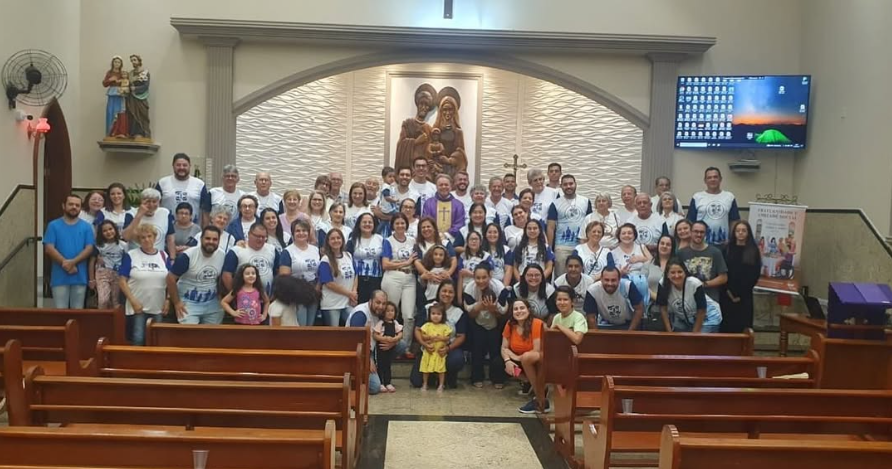
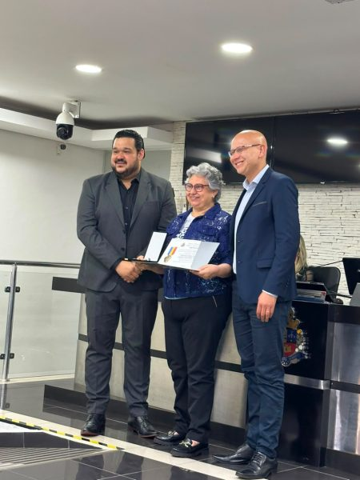
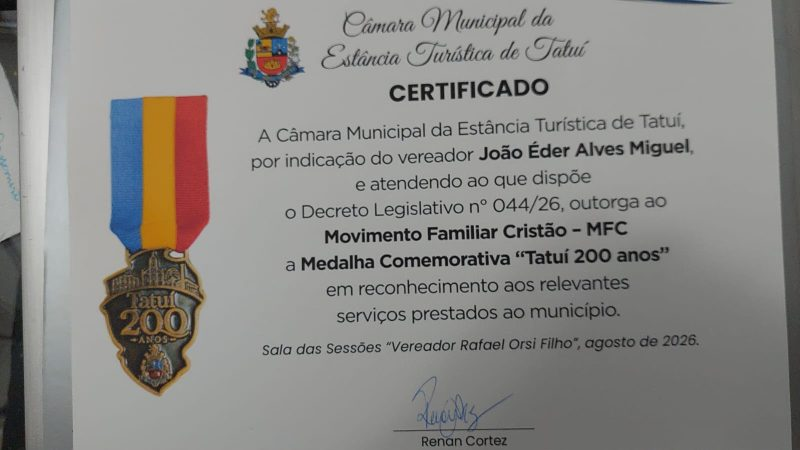

Família
Um lugar para aprender a amar, dialogar, cuidar e compartilhar.
Movimento Familiar Cristão · Tatuí, desde 1965
Encontros abertos, formação e serviço para casais e famílias de Tatuí. Há um lugar para a sua.


O MFC reúne casais e famílias para viver a fé no dia a dia, fortalecer vínculos e cuidar da comunidade de Tatuí.
Conheça a nossa história →Nossa caminhada
A lista vem direto do sistema do MFC. A inscrição abre em uma nova aba, e você continua por aqui.
Ver agenda →O que nos move
Quatro valores que guiam as famílias do MFC, dentro e fora das reuniões.
Um lugar para aprender a amar, dialogar, cuidar e compartilhar.
Uma espiritualidade vivida nas escolhas e atitudes de cada dia.
Chegar, ser conhecido, ouvido e acolhido.
Ninguém precisa caminhar sozinho.
Em agosto de 2026, a Câmara Municipal de Tatuí concedeu ao MFC a Medalha Comemorativa “Tatuí 200 anos”, em reconhecimento aos serviços prestados ao município.
Ler a nossa história →
Venha nos visitar